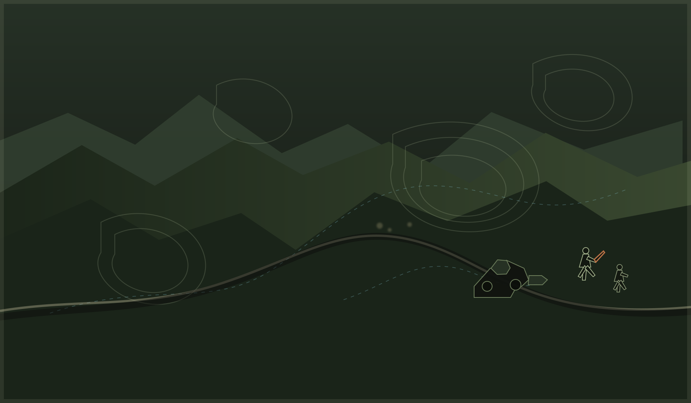

01 · Escouade
Des joueurs présents
Sans jour imposé
Quand un groupe est disponible sur Discord, on rassemble les volontaires et on prépare le départ.

Serveur Discord francophone
Une communauté Arma Reforger qui se construit. Dès qu’une escouade est réunie, on choisit un objectif et on part sur le terrain.
Recrutement en cours
Les opérations se lancent dès qu’une escouade est disponible Rejoindre l’escouadeMissions à la demande
Arma Terra est actuellement en phase de recrutement. Il n’y a pas encore de calendrier fixe : une mission démarre quand suffisamment de joueurs sont présents.
01 · Escouade
Sans jour imposé
Quand un groupe est disponible sur Discord, on rassemble les volontaires et on prépare le départ.
02 · Rôles
Selon les besoins
Les spécialisations sont réparties selon les envies et les besoins de l’escouade du moment.
03 · Déploiement
Mission lancée
Une fois l’équipe prête, on choisit l’objectif et on se déploie ensemble sur Arma Reforger.
Spécialisations
Chaque spécialité peut faire la différence. Les rôles sont attribués selon l’escouade formée avant le départ.
Le cœur de l’escouade : progression, sécurisation et contact direct.
Observation avancée et appui précis à longue distance.
Un soutien ciblé pour accompagner la progression de l’équipe.
Appui-feu et couverture pour maintenir l’initiative.
Soins, stabilisation et soutien aux membres de l’escouade.
Coordination des informations et lien entre les éléments.
Mobilité, protection et appui des véhicules terrestres.
Traitement des menaces lourdes et protection de l’escouade.
Appui aérien, transport et coordination des moyens aériens.
Rejoindre Arma Terra
Pas besoin d’être vétéran. Nous cherchons surtout des personnes fiables, respectueuses et motivées pour former les premières escouades.
Me présenter sur DiscordPrésente-toi simplement dans le salon d’accueil.
Découvre les règles de vie et l’organisation du serveur.
Dès qu’une escouade est réunie, une première session peut être lancée.
Canal de commandement
Les annonces, les inscriptions et les échanges de l’équipe se passent là-bas.
Avant de venir
Il n’y a pas encore de calendrier fixe. Les missions se lancent dès qu’un groupe de joueurs est présent et prêt à partir.
Non. Une courte prise en main et les entraînements permettent de démarrer dans de bonnes conditions.
Oui, pour les opérations organisées : la communication est au centre du jeu d’équipe.
Bien sûr. Passe sur Discord, présente-toi et regarde la prochaine activité proposée.